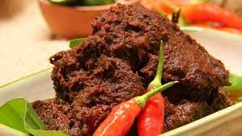

Beef Rendang

Beef rendang is one of the original cuisines of Minangkabau descent and Sumatra’s culture. It is served at special occasions to honor guests and during festive seasons. It is a delicious Indonesian dish prepared with a myriad of herbs and spices cooking for a few hours until all the liquids have been completely absorbed by the meat. Beef rendang is best eaten with steamed rice and condiments such as fried onions and chili pieces.
Ingredients
- Beef
- spices
- Red chilli
- Chopped galangal
- Garlic
- Onion
- Lemongrass
Steps
- Cut the beef into 4 cm squares, half cm thick. Do not cut the beef too small as the meat can break into smaller pieces during cooking.
- Blend all the spices, set the blend aside.
- Bash the lemongrass. Remove the green section and the outer sheath of the lemongrass. Use only the white portion. Bash them so that the lemongrass to ensure the release of the flavor.
- Heat up the vegetable oil in a wok. Saute the spices paste over low heat until aromatic.
- Add the coconut milk and lemongrass into the wok.Add the coconut milk and lemongrass into the wok.
- Add the beef and cook over medium heat. Bring the coconut milk to a boil.
- Once it is boiled, continue to simmer over low heat. Add water from time to time when the stew is about to dry.
- Cook until the beef absorbs the flavor of the spices thoroughly and the color turns to dark brown. It will take about three hours.
Recipe Source
Back to Home Page